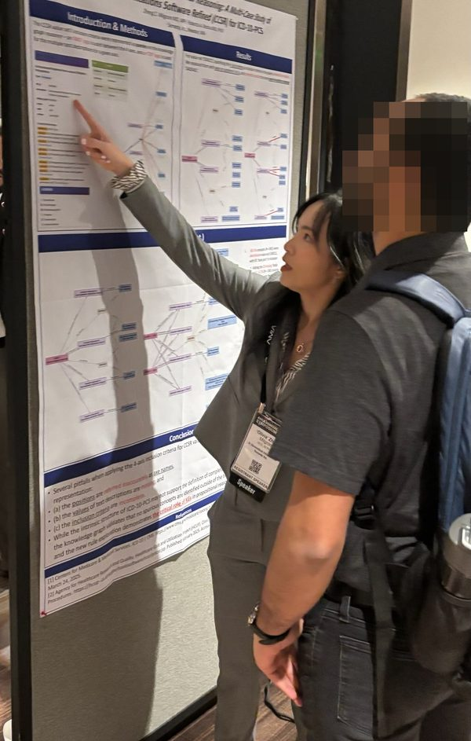
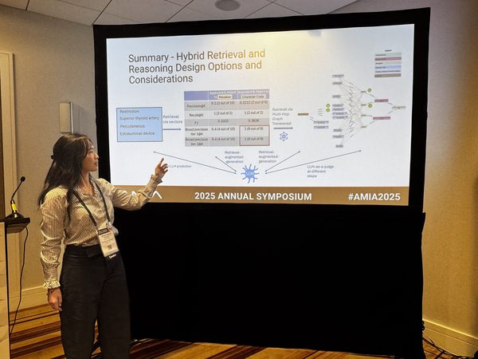
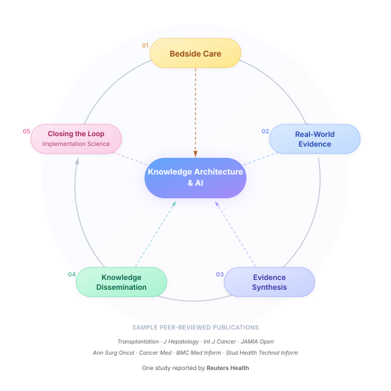

Combining the best of LLMs and symbolic semantics to produce explainable clinical knowledge — at the speed of AI, with the rigor of curated expert knowledge.
I design and ship knowledge architecture and evaluation frameworks at enterprise scale — catching where AI drifts from domain truth, working across healthcare stakeholders, engineering teams, and end users.
LLMs are powerful, but in high-stakes areas like healthcare, sounding right isn’t the same as being right — and even when AI can explain itself, that doesn’t mean experts can verify it.
The model finds a concept that looks like a match based on word overlap, but means something clinically different. Keyword similarity masks semantic divergence.
The answer starts in the right clinical territory but gradually shifts meaning through plausible-sounding steps — ending somewhere subtly wrong.
Read my case study →The model generates clinical codes, classifications, or relationships that don't exist. Without a formal knowledge base to check against, fabrications are invisible.
AI can show a reasoning path, but domain experts need to verify, explore, compare, and generate hypotheses — not just read explanations. That’s what it takes to keep the AI accountable.
Even when what the system reasons over is correct — the knowledge holds, the source is right, the concept didn’t drift — how it reasons over that knowledge still cannot be compromised.
Clinical medicine’s conditional logic is among the densest of any domain:
When a clinical AI cannot hold that logic, it doesn’t fail — it shortcuts.
Designing systems where clinical knowledge and AI inform each other continuously — not as a pipeline, but as a layered architecture.
‘RAG is dead’ — when voices across the industry say this, what they mean is that store-and-retrieve was never enough.
Even knowledge graphs — now the fastest-rising trusted context layer for GenAI in enterprise AI (according to Gartner) — are only one layer. I specialize in the deeper conceptual infrastructure where clinical logic can be proven, not just looked up.
Most AI systems stop at retrieval; others still rely on black-box machine learning. Neither LLM nor symbolic reasoning alone is sufficient. I design hybrid approaches where clinical knowledge and AI inform each other continuously.
Every answer traced back to its contexts and original intent — built to be:
Explainability, taken even to its visual form.
A paradigm shift in how auditing happens — empowering domain experts to go from open-ended investigation to focused hypotheses.
A domain expert, builder, and designer. An advocate for trustworthy clinical AI.
When the industry was just beginning to grapple with LLMs in healthcare — on why high-quality clinical knowledge management is the foundation for reliable AI models.

When classification rules (inclusion criteria) quietly break, how do you find out? Using knowledge graph reasoning to surface three types of logical inconsistency — the kind conventional methods miss.
View poster →
Exploring six hybrid approaches that combine knowledge graph traversal with LLM capabilities — showing when structured retrieval before generation outperforms LLMs alone.
A real-world case study dissecting how a medical AI chatbot confidently gave wrong dosing advice for dialysis patients.
Featured in AI 101: A Self-Paced Guide to AI in Medicine, a resource for physicians
Read on Medium →
Growing up, I was drawn to two things — art and math.
Drawing, calligraphy, stage performance… and the satisfaction of a proof that holds without a crack.
My math teacher told me I was the best student he’d ever had, and he believed I could make a difference if I stayed with STEM.
But I wanted something totally practical — something that would make a tangible difference in people’s lives. I chose medicine.
While navigating the unsustainable realities of medicine, I had my aha moment: encountering the work of Yuval Noah Harari, I saw how technology reshapes humanity and realized the power of combining clinical knowledge with AI, before large language models arrived.
AI fails not for lack of data, but for lack of understanding.
Philosophy — the questions it asks, and the ontological frameworks it clarifies — is the key to fixing it.
As MIT Sloan put it, ‘Philosophy eats AI.’
Teaching kids to tell fake from true — in art and in AI, the same question applies.
I bring that question to elementary school kids: can you tell what’s real and what’s AI?
I made this song and music video — and played it at an elementary school festival where kids tried the guessing game above. ▶ Press play the music video and try the guessing game yourself!
If you have guessed correctly, a real robot would dance to the song — showing kids how AI, music, and robotics connect.
Whether you're working on clinical AI, exploring how knowledge representation can improve LLM reliability, or just curious about this space — I'm always happy to connect and exchange ideas.